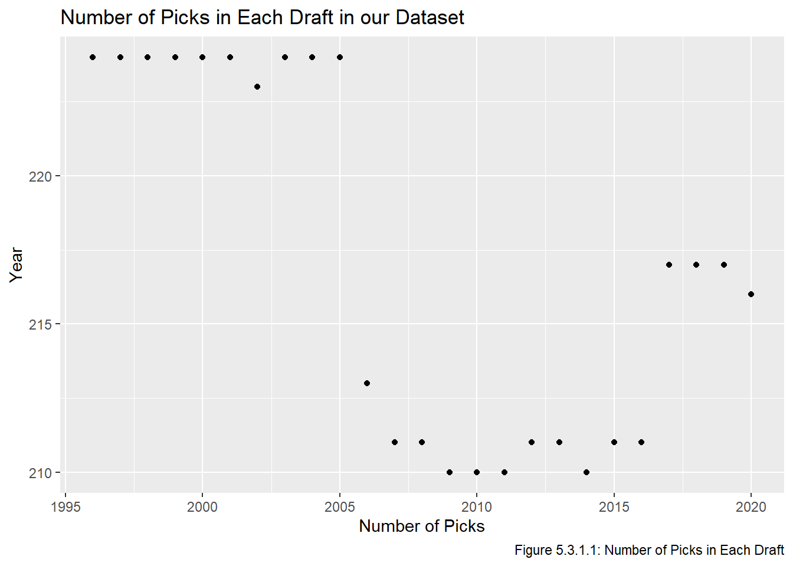
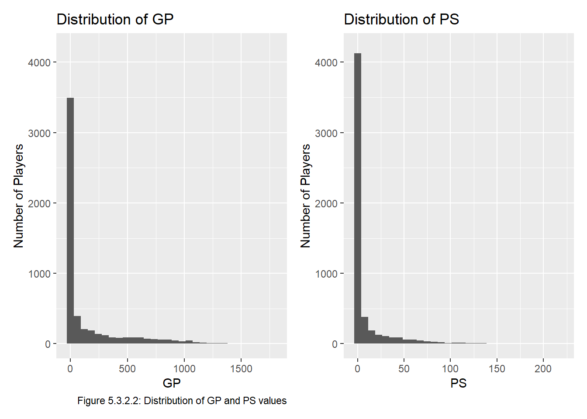

Code
# install.packages("gt")
# install.packages("ggplot2")
library(gt)
library(ggplot2)
source("functions.R") # load functions defined in prior chapters
all_data <- read.csv("all_data.csv")We install and load the necessary packages, along with functions from prior chapters and all_data.
# install.packages("gt")
# install.packages("ggplot2")
library(gt)
library(ggplot2)
source("functions.R") # load functions defined in prior chapters
all_data <- read.csv("all_data.csv")In the visualize step, we will perform some EDA (Exploratory Data Analysis) to get a sense of what our data looks like. Specifically, we will see if there are any patterns or trends that may be useful in the Model chapter.
Recall that over the years the NHL has changed how many picks there are in each round as franchises have been added. A consequence of this is that the number of rounds has also changed, and the number of total picks in a draft has changed several times throughout our dataset. Recall that we removed all picks after #224, but there could be drafts with fewer than 224 total selections. We check for this:
all_data |>
group_by(year) |>
summarize(num_picks = n()) |>
ggplot(aes(x = year, y = num_picks)) + # takes less space than gt()
geom_point()
Indeed the drafts after 2005 all have fewer than 224 selections. This is not a major problem since those picks aren’t worth very much anyway, but it is worth noting that several picks after #210 have a smaller sample size than picks 1-210.
Before doing any further EDA, we will take the five number summary, mean, and standard deviation of both the GP and PS values to get a sense of what they look like. Recall that the five number summary gives the minimum, 25% quantile, median, 75% quantile, and maximum of a dataset. Additionally, recall that PS stands for Point Share, and is a measure of a player’s career contributions to points in the standings (ie the points you get from wins, not the one that is goals plus assists).
c(fivenum(all_data$gp), mean(all_data$gp), sd(all_data$gp))[1] 0.0000 0.0000 0.0000 145.0000 1779.0000 142.7713 274.0303c(fivenum(all_data$ps), mean(all_data$ps), sd(all_data$ps))[1] 0.000000 0.000000 0.000000 3.000000 217.800000 8.249862 21.182591Clearly both the GP and PS values are right skewed. Note that the maximum of the GP data is around 6 standard deviations from the mean \((\frac{1779-142.7713}{274.0303} = 5.97)\) , whereas the maximum of the PS data is almost 10 standard deviations away \((\frac{217.8-8.249862}{21.172591} = 9.89)\).
We next check what proportion of our dataset ever played in an NHL game and what proportion generated less than 2 PS in their career, which is the value of exactly one win in the NHL.
all_data |>
filter(gp > 0) |>
nrow() / nrow(all_data)[1] 0.481113all_data |>
filter(ps < 2) |>
nrow() / nrow(all_data)[1] 0.7280265This tells us that just over half of our dataset never played in an NHL game and almost three quarters generated less than 2 PS in their career.
To get visual confirmation that our data is very right skewed, we check the histograms of the data, one of GP (on the left) and one of PS (on the right). Note that we have to pivot the data and put it in long format first:
all_data |>
pivot_longer(cols = c(gp, ps),
names_to = "metric",
values_to = "value") |>
ggplot(aes(value)) +
geom_histogram() +
facet_wrap(~metric, scales = "free") +
labs(title = "Distribution of GP and PS",
subtitle = "Note the plots have different scales",
x = "Value", y = "Number of Players") 
Indeed, both of these are very right-skewed, and clearly a lot of players end up playing a small number of games and are thus not generating able to generate much PS. We may also guess that GP and PS are positively correlated, since better players get to play in more games and thus accumulate more PS. Indeed:
cor(all_data$ps, all_data$gp)[1] 0.8558384Because of this, we choose to only include one of GP and PS in our model to avoid potential multicollinearity concerns. We choose PS over GP for a few reasons.
PS credits players for contributing to their team, whereas GP gives credit for being good enough to play for a team.
While both metrics are right skewed, in this context we prefer a metric which has a longer right tail since this will allow us to distinguish good players from elite players. Specifically, there is a hard cap on how many games a player can play in a certain timeframe, but the limit on PS is impossible to reach (a player would have to win every game in his career and be fully responsible for each and every win). In other words, if two players each played in 82 games per season for 10 seasons before retiring, they would both have played in 820 games, but their PS values could be quite different, indicating that PS is a more distingushing metric. We know PS has a longer tail because the maximum of PS is more standard deviations away from the mean than the maximum of GP, as we showed earlier.
The PS formula includes time on ice, which tends to be a better measure of player involvement than GP. For example, Player A who plays 20 minutes a night and and Player B who plays 10 minutes a night may have the same GP, but Player A would likely be considered more valuable because he plays twice as much.
Finally, we wish to confirm that players selected earlier in a draft (ie a lower overall) tend to generate more PS in their careers than those selected later. To check this, we start by creating a plot of the PS values by overall for a single draft.
set.seed(468) # for reproducibility
rand_year <- sample(start_year:end_year, 1) # year is 2015
all_data |>
filter(year == rand_year) |>
ggplot(aes(x = overall, y = ps)) +
geom_point() +
labs(x = "Pick Number", y = "PS",
title = str_glue("PS of Players Drafted in {rand_year}"))
Since clearly so many players never play in the NHL, we will create the plot without the players that played in 0 NHL games to make the plot easier to read.
all_data |>
filter(gp > 0) |>
ggplot(aes(x = overall, y = ps)) +
geom_point(alpha = 0.5) +
labs(title = "Distribution of PS",
subtitle = "Players with at ≥ 1 game only; note the plots have different scales",
x = "PS", y = "Number of Players") 
This plot is quite dense and difficult to interpret, but there isn’t really any point in jittering the data because it’ll still overlap, so we re plot it with a random 5 year sample of our dataset.
years <- sample(start_year:end_year, 5) # years are 2018, 1996, 1999, 2010, 2004
all_data |>
filter(gp > 0 & year %in% years) |>
ggplot(aes(x = overall, y = ps)) +
geom_point(alpha = 0.5) +
labs(title = "Distribution of PS for 5 Drafts",
subtitle = "Players with at ≥ 1 game only; note the plots have different scales",
x = "PS", y = "Number of Players")
Though this plot is still quite busy, it shows a strange trend that there seems to be a lot of players drafted around 200 overall that end up having successful careers. I am not sure of an underlying reason for this, but we will need to be careful when modeling to ensure that these late picks are not given more value than earlier picks.
The plot above is not great because it is missing the vast majority of our dataset (20 drafts plus all the players who played in 0 NHL games for the 5 years in the sample). To improve this, we plot the mean PS of the players selected at each pick. Typically for such skewed data the median would be preferred over the mean to improve resistance to outliers. However in this context we don’t really want to be resistance to outliers since the outliers represent elite players, and ignoring those players would make our model underestimate the values of picks which have been used to select extremely successful players.
all_data |>
group_by(overall) |>
summarize(mean_ps = mean(ps)) |>
ggplot(aes(x = overall, y = mean_ps)) +
geom_point() +
geom_point(aes(x = 205, y = mean(filter(all_data, overall==205)$ps)), col = "salmon") +
labs(title = "Mean Points Share by Pick Number",
x = "Pick Number", y = "Mean Points Share") +
annotate(geom = "segment", x = 175, y = 37.5, xend = 203, yend = 14, colour = "salmon",
arrow = arrow(type = "open", length = unit(0.32, "cm"))) +
annotate(geom = "label", x = 140, y = 39,
label = "205th overall selection,\n (mean PS of 13.124)",
hjust = "left", colour = "salmon")
We can see that in general PS does tend to decrease later in drafts, and that pick value tends to level off around pick 75, though there are some picks that stick out (for example, pick 205 has an average PS of 13.124, whereas pick 204 has an average PS of 4.856). This particular outlier is due to Henrik Lundqvist and Joe Pavelski being selected at this spot and having career PSs of 173.3 and 130.1, respectively. Very few players drafted this late make it to the NHL (20 of the 25 players in our dataset drafted at pick 205 have more than 0.3 PS), so two players with very successful careers skewing the data is not surprising.
The lessons to take from this plot when creating a model are that it will be necessary to fit a smooth curve to the model (so that \(v_i > v_{i+c}\) where \(c \in \mathbb Z^+\)), and that the estimated value of pick \(n\) should probably be influenced by the historical value of pick \(n\) AND the historical value of picks “close” to \(n\). With this in mind, we proceed to the Transform step.